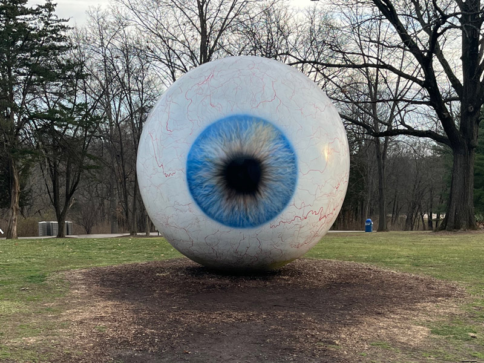

Tony Tasset's sculpture, "Eye," 2007.Laumeier Sculpture Park includes tactile versions of some of its sculptures, including this version of Tasset's "Eye" sculpture.Various red cylinders are stacked around and on top of one another haphazardly on a grassy hill, with the cylinders pointing in different directions.The tactile version of "The Way" allows people to feel the sculpture up close.Marie Watt's sculpture, "Earthmover," 2014.